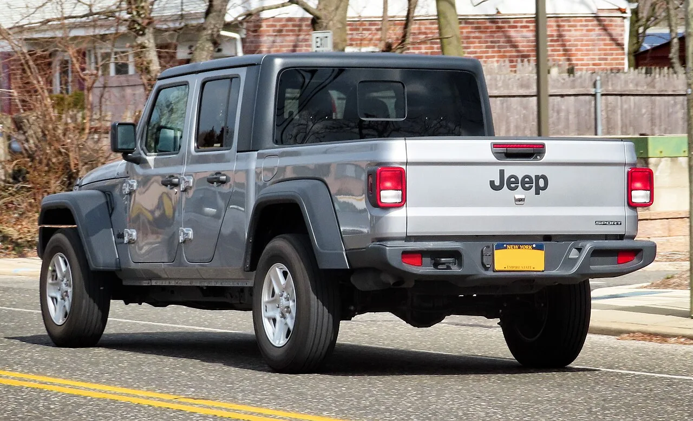

▲ 지프 글래디에이터 — 2026년형 재고를 정리하기 위해 트림에 따라 최대 6,000달러(약 800만원)까지 할인이 적용된다
2026년형 지프 글래디에이터가 시장에서 조용히 퇴장을 준비하고 있습니다. 2027년형 신모델이 출시를 앞두면서, 제조사가 기존 재고를 정리하기 위해 파격적인 할인을 걸었기 때문입니다. 그런데 이 소식을 자세히 들여다보면 흥미로운 반전이 있습니다. 다음 세대인 2027년형에서는, 요즘 픽업트럭 시장에서 좀처럼 보기 힘든 수동변속기가 다시 등장한다는 것입니다.
1. 지금 할인, 얼마나 받을 수 있나
할인 폭은 트림에 따라 갈립니다. 스포츠, 스포츠S, 85주년 기념 트림 등 기본형은 정가의 5%, 약 2,000달러(약 270만원)가 할인됩니다. 중상급형 이상 트림은 정가의 10%, 최대 6,000달러(약 815만원)까지 할인받을 수 있습니다. 구체적인 사례로는 최상위 트림인 루비콘 X가 기존 6만1,210달러에서 5만5,089달러로 조정됐습니다. 기본형 트림도 마찬가지입니다. 스포츠 트림은 3만7,829달러로 약 2,000달러가 빠졌고, 윌리스 트림은 4만1,801달러로 약 4,644달러가 할인됐습니다. 이 결과 기본형과 최상위 트림 사이의 가격 격차는 할인 전 약 7,000달러에서 할인 후 약 4,000달러로 좁혀졌습니다. 다만 이 할인은 2026년 8월 3일이 마감으로 안내돼, 지금 시점에서는 이미 종료됐거나 종료를 앞둔 프로모션일 가능성이 있어 실제 적용 여부는 딜러에 확인이 필요합니다.
2. 전문가들이 꼽은 '진짜 가치' 트림

▲ 글래디에이터 후면부 — 할인으로 중급 트림과 기본형의 가격 격차가 좁혀지면서 중급 트림의 상품성이 부각되고 있다
이번 할인의 흥미로운 부작용은 트림 간 가격 격차가 좁혀졌다는 점입니다. 원래대로라면 상위 트림일수록 기본형과의 가격 차이가 컸지만, 상위 트림에 더 큰 폭의 할인이 적용되면서 중급 트림인 윌리스나 루비콘이 상대적으로 '가장 좋은 가치'를 제공하는 선택지로 떠올랐습니다. 적은 추가 비용으로 훨씬 나은 사양을 가져갈 수 있게 된 셈입니다. 참고로 2026년형 글래디에이터는 트림에 관계없이 3.6L 펜타스타 V6 엔진(285마력, 최대토크 260파운드-피트)과 8단 자동변속기 조합으로만 판매되며, 복합연비는 갤런당 19마일 수준입니다. 즉 지금 이 할인 물량에는 수동변속기 선택지가 없다는 뜻이기도 합니다.
3. 2027년형 — 왜 수동변속기가 돌아오나

▲ 지프 랭글러 — 글래디에이터와 플랫폼을 공유하는 형제 모델로, 오프로드 마니아층의 수동변속기 수요는 이 라인업 전반에서 꾸준히 제기돼온 요구다
2027년형 글래디에이터에서 가장 주목할 변화는 수동변속기의 복귀입니다. 지프 오프로드 담당자가 직접 "수동변속기가 복귀한다"고 언급한 만큼 공식화된 계획으로 보입니다. 오프로드 마니아층 사이에서는 오토매틱보다 수동변속기가 험로 주행 시 더 정교한 제어를 가능케 한다는 인식이 강한데, 이런 코어 팬층의 요구를 반영한 결정으로 풀이됩니다. 여기에 1941년식 군용 윌리스 지프에서 영감을 받은 녹색 도장의 'Sarge' 특별판도 추가됩니다. 다만 기계적으로 완전히 새로운 파워트레인이 도입되는 것은 아니며, 2027년형은 "실질적으로 2026년형과 동일"하되 외관 패키지 수준의 변화라는 점은 짚어둘 필요가 있습니다.

▲ 지프 랭글러 실내 — 글래디에이터와 같은 계열의 오프로드 지향 인테리어를 공유한다
4. 왜 '단종'이 아니라 '세대교체'인가
이번 할인을 두고 일부에서는 글래디에이터 단종을 걱정하는 목소리도 나왔습니다. 하지만 정확히는 단종이 아니라 정상적인 연식 변경에 가깝습니다. 2027년형이 이미 확정된 상태에서 2026년형 재고를 소진하는 통상적인 절차이기 때문입니다. 오히려 수동변속기 부활과 특별판 추가라는 신규 요소가 더해진다는 점에서, 이번 변화는 브랜드가 글래디에이터 라인업에 계속 투자하고 있다는 신호로 해석할 수 있습니다.
5. 지금 살까, 2027년형을 기다릴까
할인 재고와 복고풍 신차가 같은 이름표를 달고 동시에 이야기되는 것은 흔한 일이 아닙니다. 지금 당장 좋은 가격에 2026년형을 가져갈지, 수동변속기가 돌아온 2027년형을 기다릴지 — 결국 선택은 오프로드를 얼마나 진지하게 즐기느냐에 달려 있습니다.